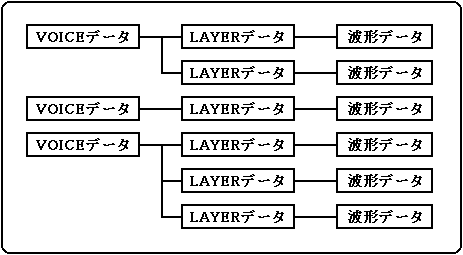

★SOUND Manual
★サウンド開発マニュアル
★SOUND Manual
★サウンド開発マニュアル
▲
戻る｜
進む▼
サウンド開発マニュアル/1.概 要
■音色バンクデータの構成(音色の構成要素)
- 音色バンクデータを構成する要素を、小さな構成要素順に説明します。
- 波形データ
- AIFFフォーマットのPCMデータそのものです。
- LAYERデータ
- LAYERは、波形データにLFO、EG、PITCH、FM設定等のデータをくわえた、基本音色単位です。MIDIベロシティー値による音量コントロールが可能なので、LAYERごとのベロシティテーブルを設定することで、ベロシティスイッチなども実現できます。1LAYER=1波形です。1ボイスに最大128まで設定できます。
- VOICEデータ
- 複数のLAYERを組み合わせてKEYSPLIT、LAYERごとの音量、ベンドレンジ、ポルタメント等のデータを加えたデータです。他のシンセサイザメーカー流の呼び方でいえば、パッチやパフォーマンスにあたります。1バンクに最大128まで設定できます。MIDIプログラムチェンジに対応して変化するものです。
どのLAYERをいくつ使うのか、音程、音量の変化に応じてどのLAYERを鳴らすのかを設定したものがVOICEデータです。
- ミキサーデータ
- 上記のデータ以外に、DSPエフェクトからのリターン量やパン(定位)などの16チャンネル分のミキシングデータを設定できます。1バンクに最大128まで設定できます。
- 上記の構成要素をまとめたものを1つの音色バンクデータと呼びます。1つの音色バンクデータは最低でも1つのボイスを持ち、メモリーの許す範囲で、最大128ボイスまで持つことができます。本サウンドシステムでは、この音色バンクデータを同一マップ内に複数個持つことができ、それぞれ独立した音源として同時に発音することができます。したがって、あるバンクで曲または効果音を演奏しながら、別のバンクを入れ替えるといったことも可能となります。このことによって、開発効率およびメモリー効率の良い、フレキシブルなシステムを構成することができます。

- 詳細は「トーンエディタユーザーズマニュアル」を参照してください。
▲
戻る｜
進む▼
★SOUND Manual
★サウンド開発マニュアル
Copyright SEGA ENTERPRISES, LTD., 1997